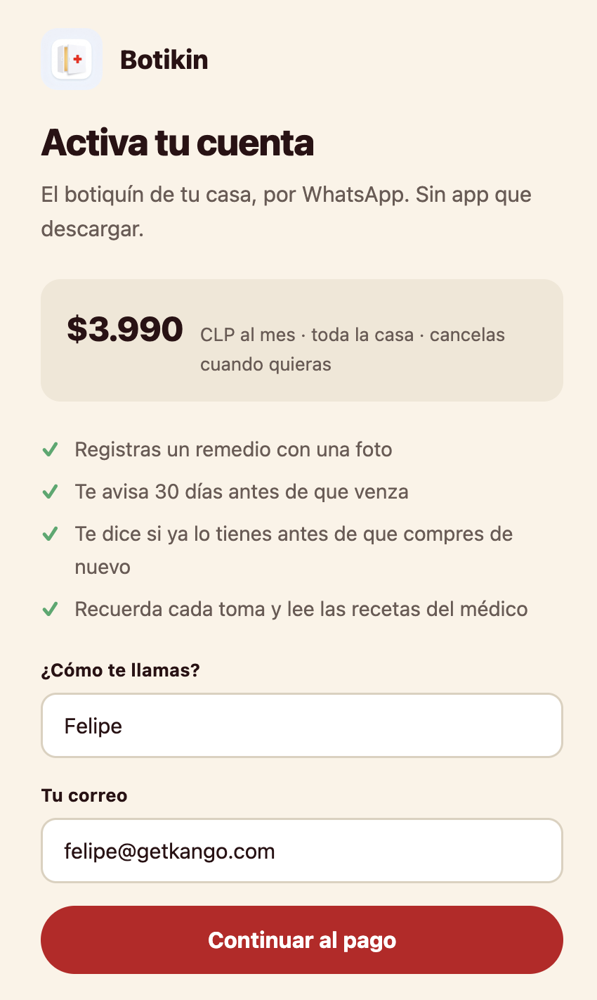
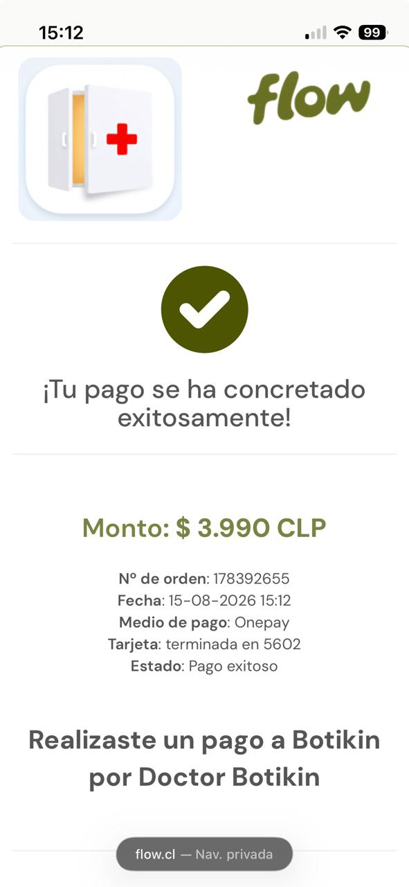

El botiquín de tu casa, por WhatsApp
Todo lo que necesitas saber para usar Botikin. No hay nada que instalar y no necesitas saber de tecnología.
Manual para la familia · Botikin · Santiago de Chile
Todo lo que necesitas saber para usar Botikin. No hay nada que instalar y no necesitas saber de tecnología.
Es un contacto de WhatsApp que lleva la cuenta de los remedios de tu casa. No es una aplicación: no se descarga, no tiene clave, no tiene menús.
Le mandas una foto de una caja y él la registra. Te avisa un mes antes de que algo se venza. Te dice si ya tienes un remedio antes de que lo compres de nuevo. Y si le mandas la receta del médico, te recuerda cada toma.
Botikin funciona por invitación. Después de pagar te llega un código al correo.


Al terminar te aparece tu código en pantalla y te llega por correo. Es de ocho caracteres, algo así:
A D 4 A – D N U Q
Es lo primero que te va a preguntar, y vale la pena hacerlo bien: de ahí sale todo lo demás.
Va a insistir con la fecha de nacimiento y no es capricho. Si guardara "4 años", en marzo esa información estaría equivocada. Con la fecha, la edad se calcula sola y nunca envejece mal. Además le sirve para no confundirse: a un niño de 4 años los remedios le vienen en jarabe, no en comprimidos.
Una foto de la caja. Eso es todo.

El vencimiento casi nunca está en la cara principal del envase. En vez de pedirte otra foto, te pregunta y tú se lo dictas. Es más rápido para los dos.
Si algo no se ve en la foto, lo deja en blanco y pregunta. Prefiere no saber antes que suponer: un dato mal guardado hoy es una alerta equivocada en tres meses.
| Cuándo | Qué hace |
|---|---|
| Compras algo que ya tienes | Te avisa antes de que gastes. "No compres: ya tienes Panadol 500 mg. Es el mismo paracetamol." Lo reconoce por el compuesto, no por la marca, así que Kitadol, Tapsin y Panadol son lo mismo para él. |
| Algo va a vencer | Te escribe 30 días antes, con qué hacer: usarlo, priorizarlo, o llevarlo a un punto limpio de farmacia. |
| Hay un tratamiento | Te recuerda las tomas del día. Le respondes "listo" y él descuenta del stock y te dice hasta cuándo alcanza. |
Mándale la foto o el PDF de la receta. Lee todas las páginas y separa los tratamientos según lo que escribió el médico: los que son de permanencia (no terminan), los que duran unos días, y los que son SOS —solo si hay fiebre o dolor—, que no llevan horario.
Escribe la palabra Botikin, sola, y te muestra la lista completa.
Está agrupado por persona y lo urgente aparece primero. El ⚠️ marca lo que ya venció o vence dentro de un mes.
También puedes preguntarle con tus palabras: "¿me queda ibuprofeno?", "¿qué tiene Bruno?", "¿cuándo vence el jarabe?".
Esto es lo más importante del manual.
Botikin no es un médico y no da consejos de salud.
Solo habla de lo que está guardado en el botiquín de tu casa. No diagnostica, no recomienda remedios, no cambia dosis y no opina sobre mezclar medicamentos. Cuando le preguntas algo así, te lo dice y te manda al médico. Eso es a propósito.
Si es una emergencia, no escribas por WhatsApp.
Dolor en el pecho, dificultad para respirar, una reacción alérgica, una intoxicación: llama al SAMU 131 o anda al servicio de urgencia. Para intoxicaciones, el CITUC es 2 2635 3800.
Escríbenos a soporte@botikin.app desde el correo con que te registraste y movemos tu casa al número nuevo. No pierdes nada.
Por ahora responde solo al número que activó la cuenta. Si otro número escribe, no entrega información de tu casa — es a propósito, son datos de salud.
Se usan solo para llevar tu botiquín. No se venden, no se comparten y no recomendamos marcas ni farmacias. Si quieres que borremos algo, se lo pides y se borra.
Escríbenos a soporte@botikin.app. Sin llamadas ni formularios.